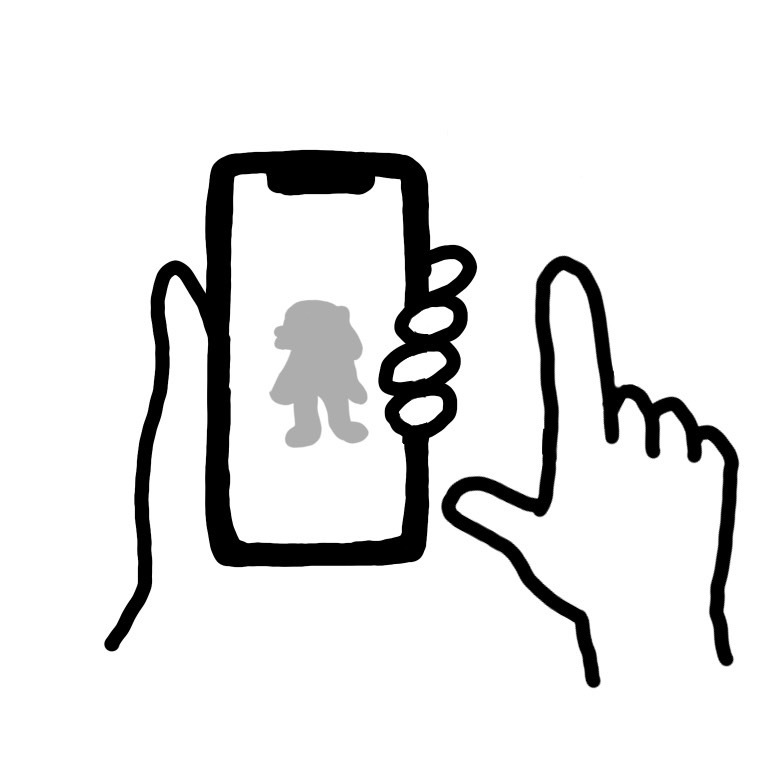
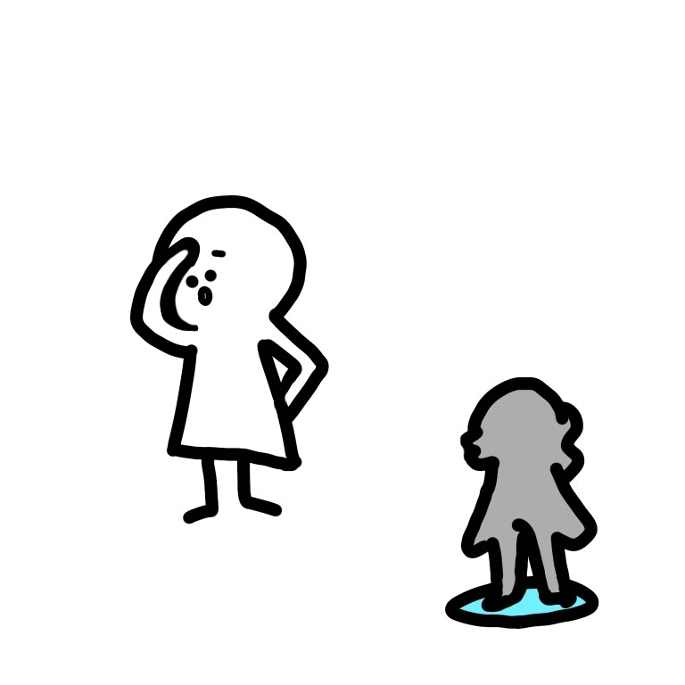
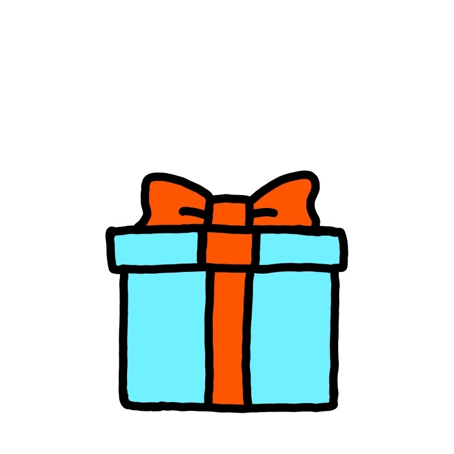

✨ スタンプラリーの遊び方 ✨
1. シルエットをタッチしよう！
「おさかなびとさがし」をスタートして画面にある「シルエット」をタッチしてみよう！何が出てくるかな？

2. ヒントを見て「おさかなびと」を探そう！
ヒントをよく読んで、まちの中にいる「おさかなびと」を探してみよう！

3. キーワードを入力しよう！
見つけた「おさかなびと」に書かれているキーワードを入力しよう！
4. ぜんぶ集めたらスタッフに見せよう！
スタンプがぜんぶ集まったら、その画面をスタッフに見せて「特典」をゲットしよう！
